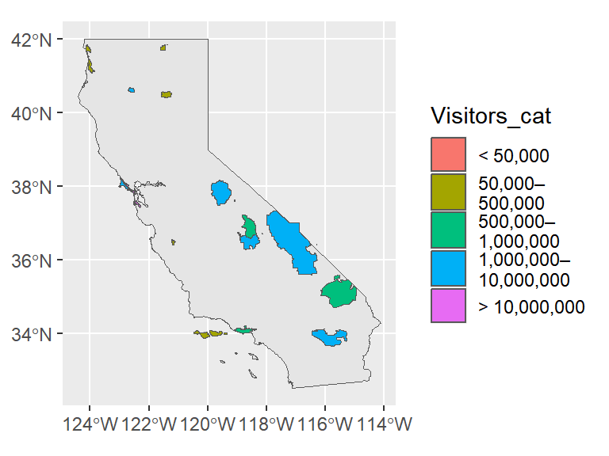
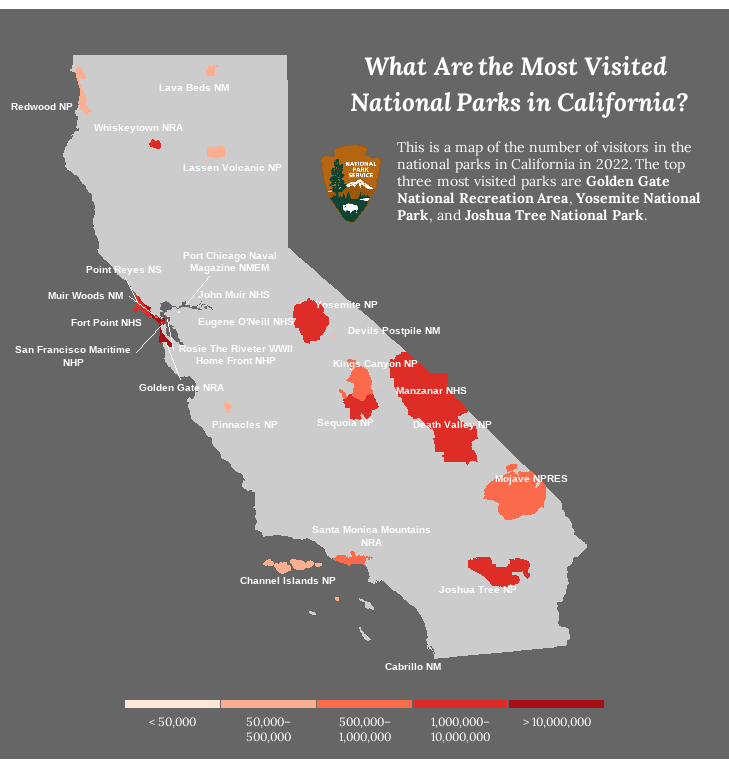

Come and take a look at the nuts and bolts of creating simple feature maps from external shapefiles in ggplots!
In the first post of this Map Series, we looked at how to create polygon maps in ggplots. But this is not the only way to create ggplot maps; there are indeed many more ways out there! And in this post, I’m going to show you another method: creating maps from shapefiles.
I believe you might have heard of shapefiles (or even used them before!). So what exactly are they? A shapefile (.shp) is a common geospatial vector data format for storing the locations, shapes, and attributes of geographic features. It comes with a set of related files (.shx, .prj, .dbf, etc.) that together describe vector features such as points, lines, and polygons, representing all kinds of spatial objects like mountain peaks, country boundaries, roads, rivers, and lakes.
Because of the commonness and popularity of shapefiles, I think it would be useful to have some basic ideas of how to handle them in R. Hopefully, after reaching the very end of this post, you’ll be able to make good use of shapefiles to create your own cool ggplot maps!
In this post, we’ll be creating a map of the number of visitors in the national parks (units managed by the National Park Service) in California in 2022. It’s called a “simple feature” map because this is the type of R spatial object we’ll use for data processing and plotting. Briefly, a simple feature object (sf) is a special data frame that contains several columns of feature attributes (the metadata like country names) and a list column of feature geometry (the coordinates representing the points/lines/polygons), with an associated coordinate reference system (crs). The R package sf is dedicated to sf objects and allows users to do all sorts of manipulation and computation.
Let’s start by preparing the data we need for making the map. The data files we have on hand are:
The shapefiles are read into R as “sf” objects using the function st_read() from the package sf.
library(tidyverse)
library(sf)
### Read the shapefile of state boundaries
CA_boundary <- st_read("NE_State_Boundaries/ne_10m_admin_1_states_provinces.shp", quiet = T) %>%
filter(admin == "United States of America") %>% # US state boundaries
filter(gn_name == "California") # California boundary
### Read the shapefile of park boundaries
Park_boundary <- st_read("CA_Park_Boundaries/National_Park_Service_Land_Resources_Division_Tract_and_Boundary_Service.shp", quiet = T) %>%
filter(STATE == "CA") # California park boundaries
### Read the CSV of park visitors in 2022
Park_visitors <- read_csv("https://raw.githubusercontent.com/GenChangHSU/ggGallery/master/_posts/2023-05-24-post-26-ggplot-map-series-no2-simple-feature-maps/CA_Park_Visitation.csv") %>%
select(Park = Field1, Visitors = Field2) %>% # select the park and visitor columns
mutate(Park_name = str_remove(Park, pattern = " N[A-Z]{1,4}")) # remove the park type abbreviationsNow we have the data loaded in R, the next step is to process them for plotting. There are two things to do here. First, we’ll join the park boundary and park visitor data so that later we can map the numbers of visitors in the parks to different colors. Second, we’ll check the crs of the two data layers (state boundary and park boundaries) to ensure that they can be drawn on the same map.
### Join the park boundary and park visitor data
Park_boundary_visitor <- Park_boundary %>%
mutate(PARKNAME = case_match(PARKNAME, "Rosie the Riveter WWII Home Front" ~ "Rosie The Riveter WWII Home Front",
.default = PARKNAME)) %>% # adjust the park name
left_join(Park_visitors, by = join_by("PARKNAME" == "Park_name")) # join by park names
### Check the crs of the two data layers
st_crs(CA_boundary)$epsg[1] 4326st_crs(Park_boundary_visitor)$epsg[1] 3857### Transform the crs of park boundary data
Park_boundary_visitor <- st_transform(Park_boundary_visitor, crs = 4326)
st_crs(Park_boundary_visitor)$epsg[1] 4326In this example, the two layers have different crs (EPSG code 4326 vs. 3857), so we used st_transform() to convert the crs of the park boundary data into the one used by the state boundary data.
It’s time to make the map. Simply pass the sf objects to the “data” argument in geom_sf() and it will take care of everything! We also cut the number of visitors into discrete categories for color mapping.
### Cut the number of visitors into discrete categories
Park_boundary_visitor <- Park_boundary_visitor %>%
mutate(Visitors_cat = case_when(Visitors < 50000 ~ "< 50,000",
Visitors > 50000 & Visitors < 500000 ~ "50,000– \n500,000",
Visitors > 500000 & Visitors < 1000000 ~ "500,000– \n1,000,000",
Visitors > 1000000 & Visitors < 10000000 ~ "1,000,000– \n10,000,000",
Visitors > 10000000 ~ "> 10,000,000")) %>%
mutate(Visitors_cat = factor(Visitors_cat, levels = c("< 50,000", "50,000– \n500,000", "500,000– \n1,000,000", "1,000,000– \n10,000,000", "> 10,000,000"))) %>%
drop_na() %>%
filter(OBJECTID != 14)
### Create the map
CA_park_map <- ggplot() +
geom_sf(data = CA_boundary) +
geom_sf(data = Park_boundary_visitor, aes(fill = Visitors_cat))
CA_park_map 
The map doesn’t really look pleasant. Let’s polish it now! We’re going to (1) change the background color of the map, (2) pick a new color palette for the visitor categories, (3) modify the legend appearance, (4) label the park names, and (5) add a title, text annotations, and a logo to the map.
# devtools::install_github("yutannihilation/ggsflabel") # install the package if you haven't
library(ggtext)
library(ggsflabel) # for the function "geom_sf_text_repel()"
library(showtext) # for the function "font_add_google()" and "showtext_auto()"
### Import the new font
font_add_google("Lora")
showtext_auto()
### Map
CA_park_map <- ggplot() +
# California state
geom_sf(data = CA_boundary, color = "transparent", fill = "grey80") +
# national parks
geom_sf(data = Park_boundary_visitor, aes(color = Visitors_cat, fill = Visitors_cat)) +
# national park labels
geom_sf_text_repel(data = Park_boundary_visitor, aes(label = str_wrap(Park, width = 25)),
color = "white", size = 2.75, family = "sans", fontface = "bold",
segment.size = 0.2, lineheight = 0.5, vjust = 0.5, hjust = 0.5,
max.overlaps = Inf, force = 3) +
# title
geom_richtext(aes(x = -115.5, y = 41.5, label = "What Are the Most Visited <br> National Parks in California?"),
color = "white", size = 6.5, family = "Lora", fontface = "bold.italic",
lineheight = 0.75, fill = NA, label.color = NA, label.padding = unit(rep(0, 4), "pt")) +
# text annotations
geom_textbox(aes(x = -114.75, y = 40, label = "This is a map of the number of
visitors in the national parks in California in 2022.
The top three most visited parks are **Golden Gate National
Recreation Area**, **Yosemite National Park**, and **Joshua
Tree National Park**."),
color = "white", size = 3.75, family = "Lora", lineheight = 0.6,
width = unit(1.8, "in"), fill = NA, box.color = NA) +
# NPS logo
geom_richtext(aes(x = -118.75, y = 40, label = "<img src='NPS_logo.PNG' width='27.5'/>"),
fill = NA, label.color = NA, label.padding = unit(rep(0, 4), "pt")) +
# color pallete
scale_color_manual(values = c("#fee5d9", "#fcae91", "#fb6a4a", "#de2d26", "#a50f15")) +
scale_fill_manual(values = c("#fee5d9", "#fcae91", "#fb6a4a", "#de2d26", "#a50f15")) +
# map limits
coord_sf(xlim = c(-125, -112), ylim = c(31.5, 42.2)) +
# legend label position
guides(color = guide_legend(title = NULL, label.position = "bottom"),
fill = guide_legend(title = NULL, label.position = "bottom")) +
# plot background and legend appearance
theme_void() +
theme(plot.background = element_rect(fill = "grey40", color = "grey40"),
legend.position = c(0.5, 0.05),
legend.direction = "horizontal",
legend.key.width = unit(0.5, "in"),
legend.key.height = unit(0.05, "in"),
legend.text = element_text(color = "white", size = 9, family = "Lora",
lineheight = 0.5, margin = margin(t = -2)),
legend.spacing.x = unit(0, "in"))
CA_park_map
This is our final product. Awesome!
To recap what we did in this post, we made a ggplot map from external shapefiles. The key is to read the shapefiles into R as sf objects using the function st_read(), make sure their coordinate reference systems are compatible, and plot the sf objects using the function geom_sf(). Finally, a bit of polishing will bring the map to the next level!
Hope you learn something useful from this post and don’t forget to leave your comments and suggestions below if you have any!